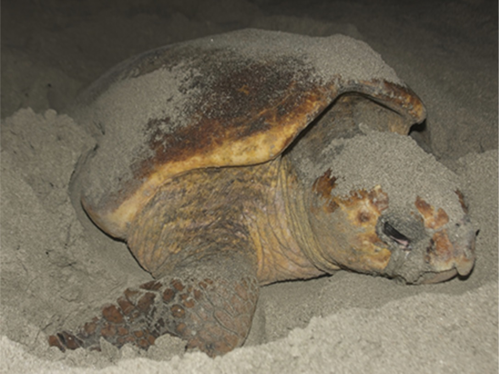
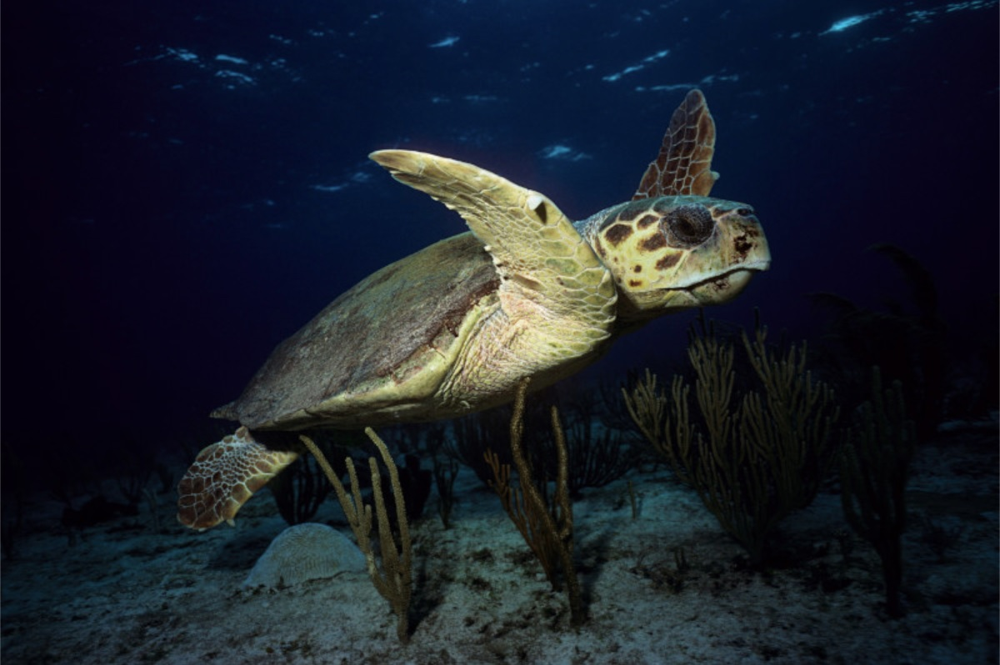

- Talla: longitud màxima de la closca -distància en línia recta-125 cm i comuna fins a 110 cm. [6]
- Pes: màxim 159 kg i comú fins a 105 kg. [6]
- Cap bastant llarg (un 28% de la longitud de la closca). [6] i ample, amb 2 parells de plaques prefrontals i un fort bec corni.
- Cinc parells de plaques laterals; el parell davanter al costal de la placa precentral; tres parells de plaques inframarginals sobre el plastró; duos formacions espinosos (pucs) a cada una de les poles nedadores.
- Coloració del dors de la closca marró vermellós amb laques clares.
- Regió ventral (plastró) groguenc amb taques ataronjados difuses.[4]
Tortuga Babaua - Caretta caretta

Estat de conservació
Vulnerable
Població
Decreixent
Morfologia
Els adults pesen de 65 a 107 kg i tenen una longitud de 82 a 109 cm. [3] Els colors varien entre el cafè fosc i el groc ataronjat, dorsalment són de color crema. Les cries són de color cafè fosc. Tenen aletes de dues arpes especialitzades per nedar grans distàncies, i tenen el cap gran i arrodonit, semblant al de la tortuga verda. Tenen un bec molt gruixut. La closca sol ser llisa en els adults i una mica més aspre en els joves. Habitualment presenten epibionts adherits a la closca.[4][5]
Ecologia
La tortuga careta és cosmopolita, molt comuma a la Mediterrània i a la Mar Negra. Present tant a l'Atlàntic Oriental com a l'Occidental, a l'Oceà Índic i al Pacífic.[7]
Aquesta espècie és la segona espècie més distribuïda mundialment i és una de les més explotades. Es distribueix per totes les costes del Pacífic d'Amèrica del Sud, de la Baixa California i de Califòrnia, també s'han trobat a les illes japoneses d'Okinawa. S'han donat casos en què la tortuga va viatjar de San Diego (Califòrnia) fins al Japó.[4]
Aquestes tortugues poden viure en aigües més fredes que la tortuga verda. També es troben al Brasil i a la reserva de Cap Canaveral.).[1]
L'espècie és carnívora, s'alimenta de mol·luscs, crustacis, peixos, meduses i altres petits i mitjans animals marins, que masteguen amb les seves grans i poderoses mandíbules. Com altres tortugues marines, les femelles retornen a dipositar els seus ous a prop de la mateixa platja on havien desclòs. Al contrari d'altres tortugues de mar, la persecució del mascle i l'aparellament usualment no tenen lloc a prop de la platja d'anidament, fent-lo al llarg de les rutes de migració entre camins d'alimentació i d'aparellament.[1]
Per motius de reproducció pot formar concentracions de centenars d'individus. La maduresa sexual arriba cap als 10 anys, quan posseeix una longitud de 60 cm. L'aparellament es produeix usualment a la superfície, els mascles usen les seves dues arpes per aferrar-se al llom de les femelles. El període de reproducció és de maig a setembre.
A la resta del món els nius solen dipositar-se en climes tropicals i subtropicals. Els llocs d'implantació preferits solen ser Brasil i Florida (Estats Units), i rares vegades a Austràlia. Normalment, ponen a l'estiu depenent de l'hemisferi. Per niar les femelles migren grans distàncies des de les zones d'alimentació. Pot produir híbrids amb la tortuga carei (Eretmochelys imbricata) i la tortuga bastarda (Lepidochelys kempii).[1]
Aquesta espècie es troba en perill d'extinció; ha estat caçada durant segles per la seva carn i la seva closca i els seus ous han estat sostrets de les platges per ser venuts pel consum humà. Actualment, són molestades pel turisme no organitzat. i per les urbanitzacions costaneres. A Florida estan morint per la contaminació d'algunes badies o zones de l'oceà. Al Mediterrani es troba en perill d'extinció per culpa de la destrucció de les platges verges, la pesca accidental i la contaminació de l'aigua del mar, com ara les bosses de plàstic que la tortuga confon amb la seva presa preferida, la medusa, i que li causa la mort per asfixia.
Com tots els rèptils autòctons de Calalunya és una espècie protegida por la Llei 3/1988, de 4 de març, de protecció dels animals (DOGC número 967, del 18 de març del 1988).
Galeria

